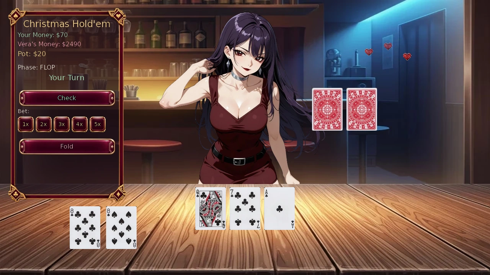
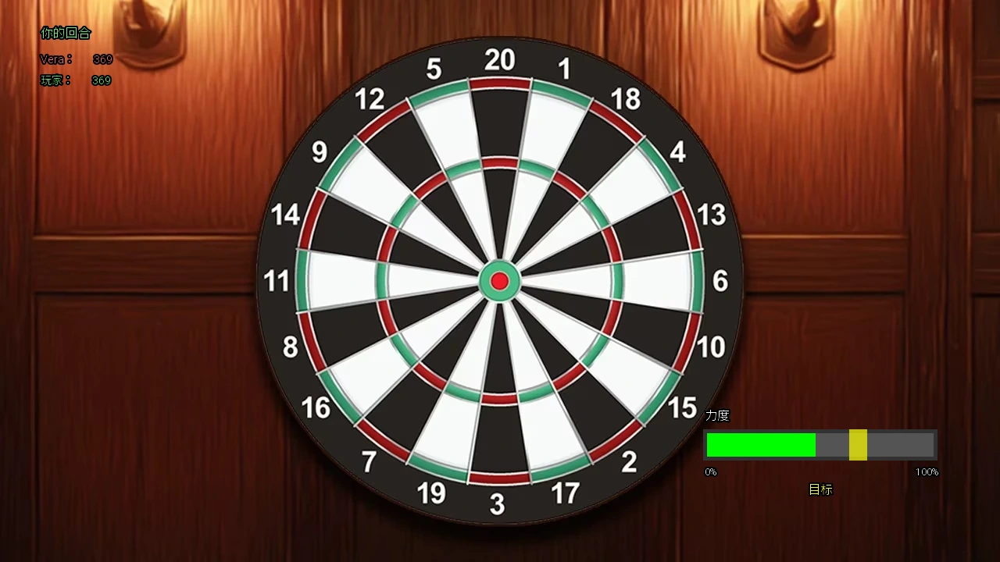
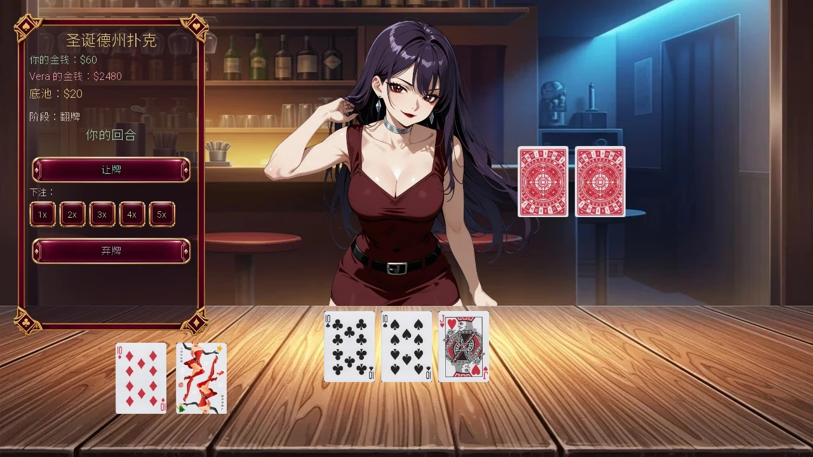

Select a screenshot to enlarge it. Screens show example inventories and progress.
Four games against Vera
The Downtown Bar in the Present era offers Darts, Liar’s Dice, Hold’em and Blackjack. They earn money and relationship progress with Vera, but a larger stake also increases your possible loss. Start with a wager you can afford to lose, learn the controls, and leave enough time for the rest of the night.
Where to start and what it costs
Travel to Present → Downtown → Downtown Bar between 20:00 and 03:00. Choose Play Darts on Vera for darts, or the location’s Play Table Games action for the other three games. Opening the table menu is free and has no relationship-stage requirement.
| Game | Base payment and time | Relationship reward |
|---|---|---|
| Darts | $50 entry, 30 minutes; Stranger+, up to 20 completed attempts per day | Win +10 base; loss +1 base |
| Liar’s Dice | Drinks, $10, $25, $50, $75 or $100; 5 minutes per round | Win +2 base; loss none |
| Hold’em | $10, $50 or $100 ante, then bets; 5 minutes per hand | Win +2 base; loss or tie none |
| Blackjack | $10, $50 or $100 wager; optional doubling; 5 minutes per hand | Win +2 base; loss or push none |
Table rounds take 3 minutes with the Time effect. Darts uses its separate action duration. These games have no separate Energy or Stamina payment; Stamina is a stat, not a spendable bar-game meter. Listed relationship points are base rewards and can change with applicable relationship bonuses.
Winnings mean profit after your stake
Vera’s route uses recorded cash won minus recorded cash lost across all four games. The total persists across visits and days. New completed games record the following amounts:
| Result | Wallet change and winnings credit |
|---|---|
| Darts win | Pay $50, receive $100: +$50 profit and +$50 recorded winnings. |
| Darts loss | −$50. |
| Cash Liar’s Dice | Win or lose the selected stake, including an accepted doubling. |
| Drinks-only Liar’s Dice | No cash transfer; $0 winnings credit or loss. |
| Hold’em win | Receive the pot after uncalled bets are returned. Credit is the pot minus your own contribution. |
| Hold’em loss | Your contributed money is lost; Vera’s contribution is not counted as your loss. |
| Hold’em tie | Split the pot; no win/loss entry. |
| Blackjack | Credit net profit on a win; record the wager lost on a loss. A push returns the wager. |
Thus ten darts wins with no losses reach $500 of current winnings. A $200 poker pot funded equally by both players produces $100 profit, not $200. Money spent on Vera’s ordinary actions is separate from gambling losses.
Winnings do not replace route requirements. For example, Cards and Confidence needs Known+ and $500 net winnings; When Tables Turn needs Crush+ and $2,500. Other scenes additionally need their previous conversations. Use Vera’s guide for her personal progression.
Darts: 369, three throws and a double finish
Both players start at 369, and Vera throws first. Each turn allows three darts. Subtract the score and finish at exactly zero with a double; the centre bull, worth 50, is a valid double finish. Going below zero, leaving one, or reaching zero without a double busts the whole turn: your score returns to its value before that turn.
- Click to start the moving power meter.
- Click again to lock power in the yellow target zone, centred on 67. The moving fill is green; the target overlay is yellow.
- Aim the crosshair, then click to throw. Click through the turn prompts when required.
The inner narrow ring scores triple, the outer narrow ring double, and ordinary numbered areas single. The surrounding bull scores 25; off-board scores zero. The number order clockwise from the top is 20, 1, 18, 4, 13, 6, 10, 15, 2, 17, 3, 19, 7, 16, 8, 11, 14, 9, 12, 5.
Strength widens the yellow target zone; Ability steadies the crosshair. These checks use base stats. Ability 90 removes wobble. Archery Focus widens the power zone by 10%, while Quick Draw reduces remaining wobble by 20%. Power outside the zone makes the dart land vertically away from your aim.
Set up an even finishing total: 40 → double 20, 32 → double 16, or 36 → double 18. With 60 remaining, triple 20 reaches zero without a double and busts; score a setup dart instead. Vera can hit triples and doubles, so concentrate on clean turns rather than waiting for guaranteed misses.
Power and aim reference
Target-zone width is 4 + base Strength ÷ 3, multiplied by 1.10 with Archery Focus. Before clipping at the meter edges, Strength 30 gives width 14, or 15.4 with the skill. Wobble decreases from 80 pixels at Ability 1 to zero at 90. A power error beyond the yellow target zone moves the result two pixels per power unit.
Liar’s Dice: raise or challenge
You and Vera each roll five hidden dice. A bid claims how many dice of one face exist among all ten. Raise the quantity, or keep the quantity and raise the face; alternatively challenge the current bid. When challenged, a count at least as large as the bid means the bidder wins. Each challenge finishes the round; dice are not removed one at a time.
Ones are wild for bids of 2–6. A bid on ones counts only actual ones. A 2–3–4–5–6 straight is rerolled. Count both matching faces and your ones before deciding how plausible a bid is. For example,1–1–3–4–5 guarantees three matches for a bid on 3,4 or 5, but only two for 2 or 6.
Drinks/$10/$25 use the basic opponent, $50 medium, $75 high and $100 expert. Higher stakes change her bidding and bluffing behavior; they do not increase the win’s base relationship reward. Do not read an expression as a reliable view of hidden dice.
A cash round can offer a double bet later in the bidding if you can cover the current stake. Accepting doubles the eventual gain or loss; declining keeps the original stake. Drinks cannot be doubled. Drinks-only rounds let you learn without cash movement and still award the win’s relationship progress.
Hold’em: shared cards and wild jokers
Christmas Hold’em uses 52 ordinary cards plus two wild jokers. You receive two private cards and share five community cards. The best five-card hand wins. The table is available through its normal bar action; its name does not require the Christmas preference to be on.
Both players pay the ante. Two private cards and the three-card flop are dealt before the first betting round. Bet on the flop, turn and river; the first bettor is chosen randomly. Use Check when nothing is owed, or Bet, Call, Raise or Fold. A betting round allows an opening bet and up to two raises. A fold awards the pot immediately.
Unmatched excess bets are returned before settlement; a short bankroll does not entitle either side to the other player’s uncalled money. Ties divide the pot, with an odd chip going to that hand’s first bettor.
Hands, strongest first
Five of a kind → royal flush → straight flush → four of a kind → full house → flush → straight → three of a kind → two pairs → one pair → high card. Jokers take the strongest available identity. A shared joker helps both players: compare the strongest complete hand each player can make.
Vera’s poker bankroll resets to $2,500 on a new game day when you reopen the table. Your losses can grow that bankroll. Reducing it to zero closes poker for that day and completes the associated event; the table returns on a later day. This is not a guaranteed daily profit. Choose affordable antes and fold when continuing is too expensive for the hand you can make.

Blackjack: beat the dealer without busting
Blackjack uses 52 cards without jokers. Number cards score their value, face cards 10, and an ace 11 or 1 as needed. Vera draws below 17 and stands on every 17, including soft 17.
Choose Hit for another card or Stand to keep your total. You may double with two cards and enough cash: it pays another stake, deals exactly one card, then stands automatically. There is no split, insurance or surrender control.
| Outcome | Total returned | Net profit |
|---|---|---|
| Two-card natural 21 beating a non-natural | 2.5× wager | +1.5× wager |
| Ordinary win or dealer bust | 2× wager | +1× wager |
| Equal totals/both natural | Wager returned | 0 |
| Loss/player bust | 0 | −wager |
At a $100 wager, a natural returns $250, for $150 profit. After doubling, your stake and possible loss are $200. An ace can drop to 1, so A+5 cannot bust on the next card; reassess its value after drawing. Higher stakes change cash exposure, not the win’s +2 base relationship reward.
Leaving, repeat play and useful skills
Finish a hand or round, then use its return or Leave the table controls. Blackjack and Hold’em also allow Maybe later before committing the next stake. Darts returns after clicking its final result. Games start fresh attempts; the long-term winnings, relationship progress and current-day poker bankroll remain.
Cheating is taught by Vera at Friend+ for $350, 180 minutes, 30 Energy and 30 Calm, but these bar games do not directly use it to change cards, dice or darts. Luck likewise does not provide a general hidden success roll here. The confirmed direct aids are Strength/Ability, Archery Focus and Quick Draw for darts, and Time for table duration. Perfect Metabolism helps Vera’s ordinary relationship calculation.
Bar Game Psychology, at Known+ and Communication 50, takes 30 minutes and grants a one-time +1 Luck. For relationship modifiers, see Relationships. See Skills and Alignment for other applicable bonuses.
与 Vera 对局的四种小游戏
现代市中心的市中心酒吧提供飞镖、吹牛骰、德州扑克与二十一点。对局可赚钱并推进与 Vera 的关系，但提高赌注也会放大损失。先用输得起的金额熟悉操作，并为当晚其他行动留足时间。
地点、时段与基本费用
路线为现代 → 市中心 → 市中心酒吧，开放对局的时段为20:00至次日03:00。在 Vera 的行动中选择「玩飞镖」，其余三项则从地点行动「玩桌游」进入。打开桌游菜单免费，也不要求关系阶段。
| 游戏 | 基础费用与耗时 | 关系奖励 |
|---|---|---|
| 飞镖 | 入场$50、30分钟；陌生人起，每天最多20次完成对局 | 赢得10点基础奖励，输得1点 |
| 吹牛骰 | 只赌酒，或$10、25、50、75、100；每局5分钟 | 赢得2点基础奖励，输无奖励 |
| 德州扑克 | 底注$10、50或100，之后另行下注；每手5分钟 | 赢得2点基础奖励，输或平局无奖励 |
| 二十一点 | 赌注$10、50或100，可选择加倍；每手5分钟 | 赢得2点基础奖励，输或和局无奖励 |
有「时间」效果时，桌游每局缩短为3分钟，飞镖则使用自己的行动耗时。这些游戏不另外消耗精力或耐力；耐力是属性，不是酒吧小游戏的消耗计量。表中关系点数均为基础值，实际奖励还可能受适用的关系加成影响。
胜利金额按扣除本金后的盈利计算
Vera 的路线检查四种游戏累计赢得的现金，减去累计输掉的现金。记录跨地点与日期保留。新完成的对局按以下金额计入：
| 结果 | 钱包变化与胜利记录 |
|---|---|
| 飞镖获胜 | 先付$50，赢后收到$100：净赚$50，记录也增加$50。 |
| 飞镖落败 | 损失$50。 |
| 现金吹牛骰 | 按本局赌注赢或输，接受加倍后的金额也计入。 |
| 只赌酒 | 没有现金转移，胜利或损失金额均为$0。 |
| 扑克获胜 | 未被跟注的多余下注先退回，胜利金额为底池扣除自己投入的部分。 |
| 扑克落败 | 只计算自己投入并输掉的钱，不把 Vera 的投入也算作你的损失。 |
| 扑克平局 | 分池，不新增胜负金额记录。 |
| 二十一点 | 获胜记录净赚金额，落败记录输掉的赌注，和局退回本金。 |
因此，按当前计法，飞镖连赢十局且没有输，才会累计$500。双方各出$100形成的$200底池，赢后的盈利为$100。普通关系行动的付款，不计为赌博损失。
金额不能代替个人前置。例如「纸牌与自信」谈心要求已知以上与净胜$500，「形势逆转时」要求迷恋以上与净胜$2,500。其他场景还可能要求完成前面的对话，完整路线可查Vera 指南。
飞镖：从369分归零，以双倍区收尾
双方从369分开始，Vera 先投，每回合最多三镖。命中分数从剩余分数扣除，最后一镖必须命中双倍区，且恰好归零；50分中心靶心也可作双倍收尾。低于零、剩1分，或未以双倍区归零，都算爆分：恢复到本回合开始前的分数，并失去剩余投掷机会。
- 点击一次，开始移动力量条。
- 再次点击，将力量锁在以67为中心的黄色目标区。绿色填充条表示当前力量，黄色覆盖区才是目标。
- 用准星瞄准，再点击投掷；出现回合提示时点击继续。
靠内的细环为三倍区，靠外的细环为双倍区，其他数字区域为单倍。外围靶心25分，脱靶0分。从正上方顺时针的数字为20、1、18、4、13、6、10、15、2、17、3、19、7、16、8、11、14、9、12、5。
力量扩大黄色目标区，能力减少准星晃动，这里使用基础属性。能力90时不再晃动；弓术专注使力量区宽度增加10%，快速拔枪使剩余晃动减少20%。力量锁在黄色目标区外，会让落点在垂直方向偏离准星。
尽量留下偶数收尾，如40分打双倍20、32分打双倍16、36分打双倍18。剩60分时，三倍20虽恰好归零，却不是双倍收尾，会爆分，应先用一镖调整。Vera 也能投中三倍与双倍区，不能指望她必定失误。
力量条与晃动参考
黄色目标区宽度为4加基础力量的三分之一，弓术专注再乘1.10。例如力量30时为14，有技能时15.4，最终还会受力量条边缘限制。晃动由能力1时约80像素逐渐降至90时的零；超出黄色目标区后，每多偏离1点力量，垂直落点便偏移2像素。

吹牛骰：加叫或质疑
你与 Vera 各有五颗暗骰。叫数是在声称双方十颗骰子里，至少有多少颗指定点数。可以增加颗数，或保持颗数并提高点数，也可质疑当前叫数。揭晓时，实际数量达到或超过叫数，便由叫数者获胜。一次质疑就结束整局，不会逐颗减骰。
叫2至6时，1点为万能点；叫1则只数真正的1。2、3、4、5、6顺子会重掷。判断前先数自己的对应点数与1，例如1、1、3、4、5，对3、4或5都保证至少三颗，对2或6则保证两颗。
只赌酒、$10和$25为基础难度，$50为中级，$75为高级，$100为专家。提高赌注会改变她的叫数与诈唬方式，不会提高获胜的基础关系奖励；表情也不能当作可靠的暗骰读数。
现金局可能在叫数进行到一定轮次后提出加倍赌注，且你须付得起当前赌注。接受后，最终赚或亏的金额都翻倍，拒绝则保留原注；只赌酒不能加倍。只赌酒可在没有现金变化的情况下练习，获胜仍有关系进度。
德州扑克：公牌与万能小丑
圣诞德州扑克使用52张普通牌加两张万能小丑。双方各两张底牌，共享五张公牌，以能组成的最佳五张牌比大小。它从普通酒吧行动进入，不要求开启圣诞偏好。
双方先付底注，发两张底牌与三张翻牌后，才开始第一轮下注，之后还有转牌和河牌两轮，首位行动者随机。有未跟金额时可跟注、加注或弃牌，无欠注时可让牌或下注。每轮允许一次开注与最多两次加注，弃牌立即结算底池。
没有被跟注的多余下注会先退回，资金不足不会让一方拿走对方未被跟注的钱。平局分池，若有一枚无法平分的筹码，则给这一手首先下注的人。
牌型由大到小
五条 → 皇家同花顺 → 同花顺 → 四条 → 葫芦 → 同花 → 顺子 → 三条 → 两对 → 一对 → 高牌。小丑会补成可用的最强牌，公牌中的小丑能同时帮助双方，应比较各自完整的最佳牌型。
在新的游戏日重新打开牌桌，Vera 的扑克资金恢复为$2,500；你输掉的钱也可能让她的资金增多。把资金赢到零会完成对应事件并关闭当天牌桌，之后的日期可再玩。这不等于每天保证赚$2,500；底注应量力选择，继续跟注过贵时可以弃牌。

二十一点：不爆牌地胜过庄家
二十一点使用不含小丑的52张牌。数字牌照数值，花牌10点，A按需要算11或1。Vera 少于17点便要牌，所有17点都会停牌，包括软17。
「要牌」再拿一张，「停牌」保留现有点数。手里两张牌且资金足够时可以加倍：再付一份赌注，只拿一张牌后自动停牌，没有分牌、保险或投降控件。
| 结果 | 总返还 | 净盈亏 |
|---|---|---|
| 两张天然21，胜过非天然牌 | 赌注的2.5倍 | 赚1.5倍赌注 |
| 普通获胜或庄家爆牌 | 赌注的2倍 | 赚1倍赌注 |
| 同点数或双方天然21 | 退回本金 | 0 |
| 落败或自己爆牌 | 0 | 损失赌注 |
下注$100时，天然21总共返还$250，净赚$150；加倍后总赌注与可能损失为$200。A可降为1，所以A+5再拿一张不会立即爆牌，但拿完后仍应重新计算。大赌注改变现金风险，不提高获胜的2点基础关系奖励。
退出、重复游玩与技能帮助
完成一手或一局后，使用返回或离开牌桌选项；二十一点和扑克也可在下一次下注前选择稍后再说。飞镖则点击最终结果返回。新对局会重新开始，但累计胜利金额、关系进度与当日扑克资金保留。
Vera 在朋友以上可教作弊，基础费用为$350、180分钟、30精力和30镇定，但不会直接改变这几项游戏的牌、骰子或飞镖结果；幸运也不是通用的隐藏胜负判定。已确认的直接帮助为飞镖的力量、能力、弓术专注和快速拔枪，以及桌游耗时的「时间」效果。完美代谢则帮助 Vera 的普通关系奖励。
Adapted and updated from the community Chronoromancer Wiki. Community source and history · CC BY-SA 4.0. Game images © Chronoromancer Studio.